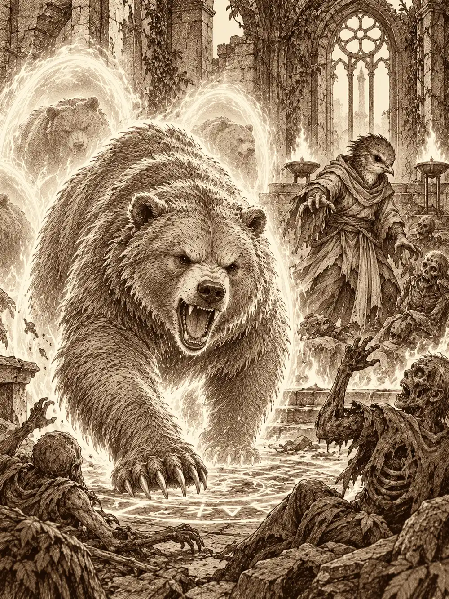

Capítulo 153
La tumba del bosque
Libro IX · Mareas y muertos
En la taberna de Kitaro había un agujero nuevo en la pared, redondo, del tamaño de una niña con forma de oso. Arwen lo había abierto a mordiscos a lo largo de varios días porque tenía hambre y la puerta le parecía demasiado lejos. Ahora estaba sentada a una mesa, con los pies colgando, y le daba golpecitos en el brazo a un hombrecillo verde que intentaba explicarle el dinero.
"A ver, a ver. Si yo les doy monedas, ellos me dan comida. Pero entonces ellos pierden comida, que se come, y se quedan con esto, que es de metal y te parte un diente".
El duende se llamaba O Fortune y la ayudaba a vender las hojas, plantas y materiales que Arwen hacía crecer. Le había explicado el intercambio de diez maneras distintas, y la niña seguía convencida de que los adultos salían perdiendo. Kitaro, desde la barra, se quejaba de los destrozos con las manos sobre el mostrador, aunque a los cazadores les seguía dando de comer gratis. "Ocúpate de la niña, que me está costando más de lo que trae".
Así encontró Kazuki a Arwen aquella mañana. El noble del Feywild había venido a Ukio a hacer recados para los cazadores y a seguir un asunto propio: una droga que Gelbreak sospechaba que venía de su plano y sobre la que ya había consultado a sus contactos feéricos. Reconoció enseguida la especie de O Fortune y se sentó con ellos. Arwen le contó que vendía plantas, que dormía casi siempre en palacio, que jugaba con Shizuka y que iba al bosque siempre que podía, porque se estaba muriendo. Sus plantas lo retenían un poco. No lo bastante.
En la tienda del alquimista, O Fortune entregó las hierbas y contó con cuidado el precio de un anillo de protección para que Arwen no vaciara la bolsa entera sobre el mostrador. Kazuki le dejó al alquimista una muestra del polvo alucinógeno. El alquimista lo miró con una lupa diminuta, aceptó cinco monedas, calculó dos o tres días de trabajo y prometió enviar el resultado a la base con discreción. Al salir, a Arwen se le cayeron del pelo unos pergaminos. Kazuki se agachó y los recogió sin que nadie lo viera. Uno servía para ver en la oscuridad.
Hicieron una apuesta, pasaron por la tienda de Asami y luego la niña sacó a su cuervo y llamó a Chilia.
Antes de entrar en el bosque, Arwen preparó un banquete. Lo sirvió sobre unas hojas grandes, con bayas, raíces y algún insecto que crujía, y el que comía de aquello quedaba más fuerte y sin miedo, aunque durante un rato le picaba todo el cuerpo. Después tocó la frente de Kazuki para que viera un poco más allá del presente. El noble cerró los ojos y vio muertos que se levantaban de la tierra, y supo hacia dónde había que ir.
Chilia les dio a todos ojos para la oscuridad. Arwen encendió además una llama pequeña sobre la palma, porque bajo aquellos árboles la tierra estaba muerta y el olor a podredumbre le hacía daño en la nariz.
De un tronco hueco salieron unos ruidos. Arwen se acercó agazapada, con las garras y los dientes preparados, y cuando asomó un hocico saltó sobre él. Un grito agudo. Dentro del árbol había tres tanuki temblando. El herido le pidió perdón: la había tomado por uno de esos muertos malos que estaban atacando el bosque. Arwen se disculpó también, le curó la herida y le ofreció una poción. Los tanuki contaron que huían de los no muertos y de una criatura enorme que habían visto pasar volando. Arwen sacó su cuervo y le ordenó guiarlos hasta el pueblo. El pájaro los miró relamiéndose, y la niña tuvo que repetírselo dos veces.
Más adelante, Kazuki vio algo moverse entre la maleza, pensó en una trampa y lanzó una piedra para activarla. Era un kodama. La piedra hirió a la pequeña criatura de madera, que ya estaba enferma. Arwen corrió hacia ella, le dio de beber una poción despacio y le puso las manos encima. Tenía el cuerpo recorrido de venas negras, y cuando tosía le salía savia oscura. La magia de Arwen frenó la corrupción, pero no la arrancó. Kazuki intentó disiparla y su conjuro rebotó contra algo más fuerte. Arwen se guardó al kodama en el pelo, entre los mechones enredados, y siguió curándolo por el camino.
Kazuki tendió sus sentidos para buscar magia. Lo que encontró le cayó encima como una losa. Era necromancia, tan intensa que lo obligaba a encorvarse, distinta de todo lo que había conocido. Para su incomodidad, Chilia también brillaba con una magia necrótica muy poderosa. No dijo nada.
Encontraron tres cultistas muertos, abiertos por cortes y mordiscos, con armas de filo sucio. Llevaban pociones, y uno guardaba una nota doblada en cuatro que Kazuki se metió en el bolsillo. Pensó que quizá alguien atacaba el bosque desde varios puntos a la vez, como desde los puntos cardinales. Era solo una idea.
Una luz se movía entre los árboles. Olía a fuego y a algo más cálido, a animal, y cuando se detuvo a unos metros vieron que era un kitsune. Esas criaturas solían apartarse de cualquier humanoide, pero aquel se quedó quieto, los olió uno por uno y retrocedió con disgusto ante Chilia, que se olió a sí misma sin entender qué pasaba. Luego vio los collares.
"¿Conocéis a Erk?".
Arwen dijo que era un pájaro grandote con arco, compañero de los cazadores.
"Erk me salvó cuando era pequeño. Erk y Maroxi". El kitsune les contó lo que había visto: una masa negra que avanzaba por el bosque y marchitaba la tierra a su paso. Había intentado plantar semillas de nuevo y no crecía nada. Ahora estaba sacando a los animales de aquella zona. Arwen le prometió que, cuando la cosa mala muriera, ella haría que el bosque volviera a la vida.
"Si eres amiga de Erk, seguro que sí. Encantado, Arwen. Yo soy Koi".
Le dio la patita y aceptó guiar a los animales hacia el pueblo. Arwen se transformó en kitsune para seguir adelante, y desde entonces sus pasos fueron dejando un rastro de chispas sobre la hierba seca.
Iban hacia el sur cuando Arwen se puso a cantar en silvano, y otra voz se unió a la suya. Era bellísima y tenía algo roto, un carraspeo que aparecía y desaparecía. De entre los pocos árboles que quedaban salió una dríade con el cuerpo de madera doblado, los dedos torcidos y ramas que le brotaban por donde no debían, abriéndose paso entre la corteza. Unas venas negras le subían por todo el cuerpo.
"Soy Ismira".
Arwen la tocó con su magia, y la dríade le cogió la patita con fuerza.
"Matadme".
La niña no entendía por qué. Kazuki la tomó en brazos y la giró de espaldas, para que no viera, y miró a Chilia. Chilia se acercó a la dríade y le hundió la mano en la cara. Arwen lo oyó todo y no vio nada. Preguntó qué había pasado, dónde estaba, y Kazuki le dijo que había vuelto a la tierra, a la madre naturaleza, con una sonrisa que pretendía tranquilizarla. Arwen se quedó confusa y siguió andando.
Al final de aquel camino de árboles muertos había una capilla medio derruida. No quedaba nada vivo alrededor, y el olor que salía de ella se notaba con la primera bocanada de aire. Kazuki se detuvo en la entrada y vio el futuro: el bosque entero muerto y, volando sobre él, una criatura que reconoció de los relatos. Era Lady Ball, de la casa de Ball, la única portadora de la Marca de la Muerte entre las marcas de los dragones. Estaba muerta, y muerta no podía usar la marca de la forma ordinaria.
Chilia empujó la puerta, que se vino abajo entera.
"Esto es como la casa de mi hermana", dijo, mirando alrededor. "Igualita".
Dentro había mesas cubiertas de un polvo tan espeso que tenía grosor, vasijas rotas, calaveras antiguas, inscripciones casi borradas. En el centro, un sarcófago con la figura de una mujer elfa tallada en la tapa. La tapa estaba movida. Quedaba un hueco por el que podía haber pasado alguien. Kazuki se asomó. Estaba vacío, y de dentro salía la muerte más pura.
Arwen dio unos pasitos atrás. "De aquí salió algo. No me gusta".
Kazuki se arrodilló a su altura y le contó lo que sabía. La casa de Ball era una familia antigua marcada por los dragones, y la unión de esa marca con los dragones se consideraba tan peligrosa que las otras casas y los propios dragones se aliaron para exterminarla. Abrió su libro de conjuros para buscar algún ritual que contuviera aquella podredumbre, y la magia de las páginas se le escapó, absorbida por el aire del lugar. Le preguntó a Chilia si ella conocía alguno.

"Yo sí". Y le dio una patada al sarcófago.
Sonó un clic. Del costado de la piedra se abrió un compartimento y cayó al suelo un libro con la Marca de la Muerte en la tapa. Kazuki lo recogió envuelto en un paño, sin tocarlo con la piel. Arwen lo olfateó y apartó el hocico. Olía a lo mismo que todo lo demás.
"Deberíamos quemarlo".
Kazuki abrió la primera página. Hablaba del principio de las marcas, dadas por los dragones hacía mucho tiempo en un plano llamado Everon. Empezó a copiarlo a toda velocidad en su propio libro, el mismo donde guardaba las notas sobre la droga.
Los muertos llegaron antes de que terminara.
Rodearon el templo por todos lados: esqueletos, zombis, cosas que habían sido otras cosas. Kazuki tocó a Chilia y la volvió tan rápida que parecía estar en dos sitios a la vez, y luego hizo caer tormentas de hielo sobre la horda. Arwen, con su forma de zorro, escupía fuego, curaba heridas, levantaba un tótem de unicornio y llamaba a un conejo de las hadas que peleó un rato y luego se marchó porque era la hora del té. El miedo que traían aquellos muertos les pasó por encima como agua por una piedra, gracias al banquete. Chilia saltaba de un enemigo a otro sin tocar apenas el suelo. Los tres salieron vivos.
Cuando todo acabó, Kazuki volvió a su libro. Las páginas donde había copiado la historia de la marca se estaban deshaciendo, convertidas en una ceniza fina que se le escurría entre los dedos. Las notas de la droga seguían intactas. Pensó en dejar el original donde lo había encontrado, lo devolvió a la tumba y, al final, volvió a por él. Se lo llevaría para estudiarlo con Sirth.
Arwen registró los restos de los enemigos. Encontró veinte monedas, pero no otro kodama. Al tocar los huesos, se deshicieron en trocitos negros, igual que las páginas, y solo quedaron armaduras oxidadas que no servían para nada.
Luego se acercó al sarcófago. En el interior de la tapa había arañazos profundos, hechos desde dentro. Recogió un poco de tierra del fondo en un frasco. El kodama que llevaba en el pelo seguía vivo, tosiendo, con las venas marcadas. Kazuki volvió a buscar magia y la encontró igual de intensa, más aún junto a la tumba. Memorizó la figura de la tapa y el nombre grabado en ella: Ilmarrow Ball.
Chilia empezó a gritar el nombre de Arwen por todo el bosque. La niña estaba fuera, dando vueltas alrededor de la capilla con sus patas de fuego, dejando marcadas en la tierra muerta unas runas que solo los druidas conocían.
"Tengo que hablar con Sirth", dijo Kazuki. "Y con Banzo, para avisar a todos los cazadores".
Arwen dijo que ella daría un rodeo. Quería saber si los animales habían llegado al pueblo y si podía nutrir un poco la tierra para que aguantara, aunque no estaba segura de que aguantase mucho más. Si volvía a palacio, se lo contaría a Calista y a Gelbreak. Kazuki le puso la mano en la cabeza y la magia del Feywild la borró del todo: las patas, la cola, el hocico.
"Qué divertido", dijo Chilia. "Yo también sé hacerlo". Y desapareció.
Las huellas de fuego se alejaron hacia el bosque. Kazuki desanduvo el camino deprisa. Y en la capilla vacía, entre el polvo y las calaveras, una voz preguntó a nadie dónde se había metido todo el mundo.
Esa noche Arwen no durmió. El kodama respiraba apenas, hinchado y cubierto de venas negras, y antes de cerrar los ojos le dijo que el bosque se moría. Ella le cantó un conjuro de restablecimiento que sonó como el aullido de un lobo. Las venas se debilitaron hasta casi desaparecer, aunque dejaron marcas, como cicatrices bajo la corteza. Cuando la criatura se durmió, Arwen siguió fortaleciéndola y le dibujó runas de druida con la sangre de su propio dedo. Acabó jadeando y con la nariz sangrando. Había frenado la corrupción. No la había curado.
Por la mañana, Chilia entró en palacio apartando de un empujón a un tritón y encontró a Arwen agotada. Le pasó un poco de alivio con la mano antes de aburrirse. Juntas fueron a buscar a Gelbreak porque había prometido sal, y entraron en la habitación de la pareja sin hacer caso de los intentos de mandarlas a la cocina. Chilia olisqueó a Calista y al drow con mucho interés y les ofreció su amistad entre historias inquietantes. Al final llamaron a Mei, la criada, que las llevó a las despensas. Cuando oyó que la niña necesitaba mucha sal para un ritual del bosque, les dio varios sacos y guardó otros para que el palacio pudiera seguir comiendo. Chilia se los cargó al hombro como si fueran plumas, se bebió una poción de velocidad y salió disparada con Arwen en la dirección equivocada. Cruzaron la Puerta Negra hasta una construcción rodeada de demonios; Chilia los saludó, se dio cuenta del error y volvió a correr hacia el norte, hasta Jigoku no Mori.
En la capilla trazaron un círculo con runas de los druidas pastores, fuego y sal, para contener lo que estaba dañando el bosque. Chilia añadía dibujos propios a los sellos. Arwen quería proteger el bosque, y le explicó que la muerte natural era otra cosa, que aquello no lo era.
Entonces un olor dejó a Chilia inmóvil. El cuerpo se le retorció, los ojos se le volvieron negros y habló con otra voz, una voz que decía tener un vínculo con ella y la llamaba candidata de la muerte. Arwen intentó liberarla con energía dorada, y aquella presencia la paralizó con un toque y levantó del suelo dos docenas de esqueletos y zombis.
La niña consiguió moverse. Una luz verde le bajó por los brazos, abrió portales dorados por donde llegaron osos y se convirtió ella misma en osa para seguir con el ritual. La entidad gritó ante la luz, los no muertos se derrumbaron y Chilia cayó al suelo con el cuerpo roto. Arwen ordenó a los osos que la protegieran, curó a los animales y siguió regenerando a su amiga hasta que los huesos volvieron a su sitio y Chilia abrió los ojos, dolorida.
"Algo te controlaba", le dijo Arwen.
Terminó la barrera con sal y un aullido dorado que le hizo sangrar otra vez por la nariz. Puso una luz verde en la mano de Chilia para calmarla, y Chilia volvió a caer, esta vez roncando. Los osos las llevaron de vuelta al pueblo. El círculo quedó cerrado. El resto del bosque seguía enfermo.
En el puerto de Sho, Banzo ayudaba a cargar cajas y observaba. Ciudadanos y tritones apenas se cruzaban la mirada si no era para comerciar. Los vecinos aceptaban su ayuda y alguno le daba unas monedas; los tritones la rechazaban. Cuando insistió y quiso tomar una caja, dos tridentes le apuntaron al pecho y una voz le habló en un idioma que no entendía. Los guardias del shogunato se pusieron tensos, con órdenes de no intervenir, y los civiles se apartaron. El goliat levantó las manos, soltó una broma y se retiró. Al pasar junto a los soldados les dio las gracias en voz baja, y los vio relajarse.
En capitanía ofreció al encargado su experiencia en pesqueros y en cascos reforzados para el hielo. Lo había aprendido, explicó, después de un accidente mientras cuidaba grifos. El hombre le miró la muñeca sin mano y puso en duda la oferta. Banzo se rio, le dijo que si había problemas ya sabía dónde encontrarlo y se fue hacia el astillero.
Archi, mientras tanto, cruzaba Sho cantando, y otra canción suya, burlona, le ganó miradas torcidas de algunos tritones. En mitad de la calle, una voz le habló dentro de la cabeza y le preguntó por un encargo pendiente. El gnomo le explicó que el recipiente elegido no retenía suficiente energía. La voz le insinuó que había algo mucho más potente cerca, en manos de sus compañeros, y le advirtió que, si tardaba, lo sustituiría.
Archi se sentó en una terraza con un té y su pipa. Al poco llegó Jin y se sentó con él. El gnomo achacó a un rayo su nueva manera de hablar y fue llevando la charla hacia los materiales capaces de guardar electricidad. Jin le habló de unos objetos hechos de elementos puros, peligrosos al tacto. Solo había dos en su poder, dijo, y no creía que lo que Archi buscaba estuviera entre ellos. Que le preguntara a Calista. Archi le dio las gracias, dejó una moneda para la cuenta y echó a andar hacia palacio.